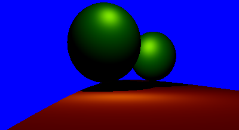
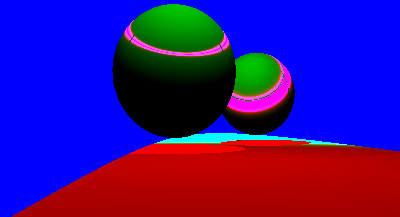
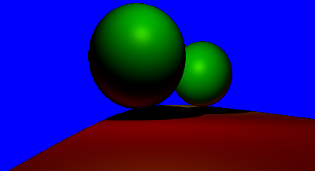

Checkpoint 3: Phong Illumination: 3 different position of light sources(ks = 0.2)
Bonus 1: Add support for multiple light sources: 2 different light positions
Bonus 2: Another illumination model : Phong-Blinn
Bonus 2: Another illumination model : Attempted Strauss
Bonus 3: Super sampling : Spawned 16 rays per pixel
